Reembasar
Faz sentido quando a base perdeu adaptação, mas a estrutura, dentes, oclusão e estética ainda estão aproveitáveis.
Uma removível bem resolvida começa no planejamento: classificação do arco, preparo de apoios, desenho de conectores, escolha dos retentores, área de sela, oclusão e manutenção futura.
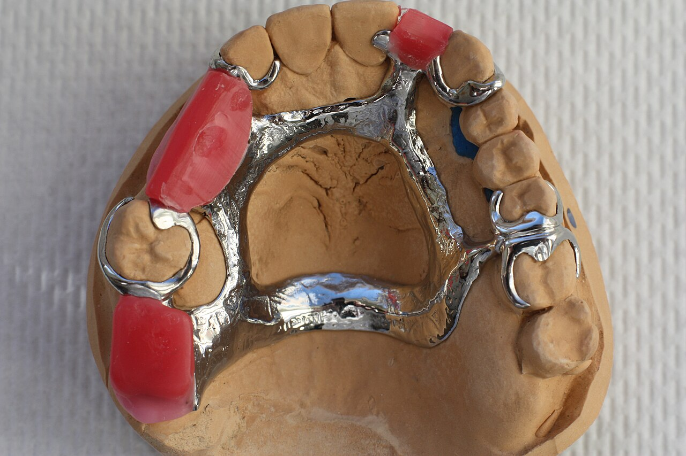
Rigidez para unir a arcada sem deformar em função.
Retenção medida, apoio e reciprocidade no pilar.
Base, dentes e bordas ajustados ao tecido.
Boa opção quando o caso precisa de rigidez, apoios definidos, conectores mais finos e maior controle biomecânico.
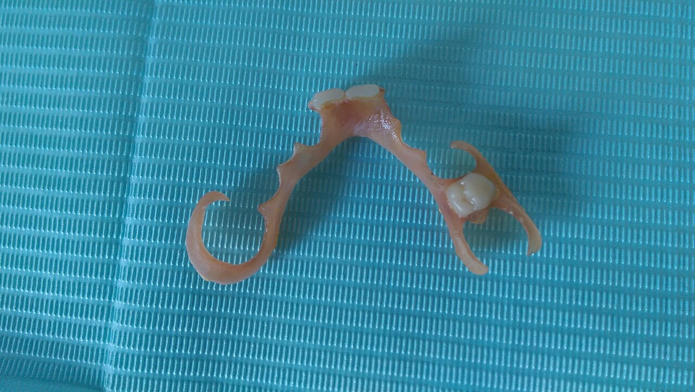
Alternativa para regiões visíveis, desde que retenção, espessura e manutenção sejam compatíveis com o caso.
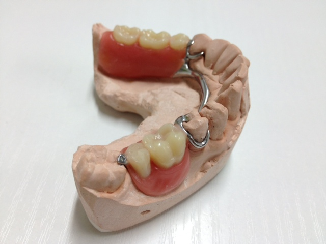
Indicada quando há dentes remanescentes capazes de contribuir com suporte, guia e retenção.
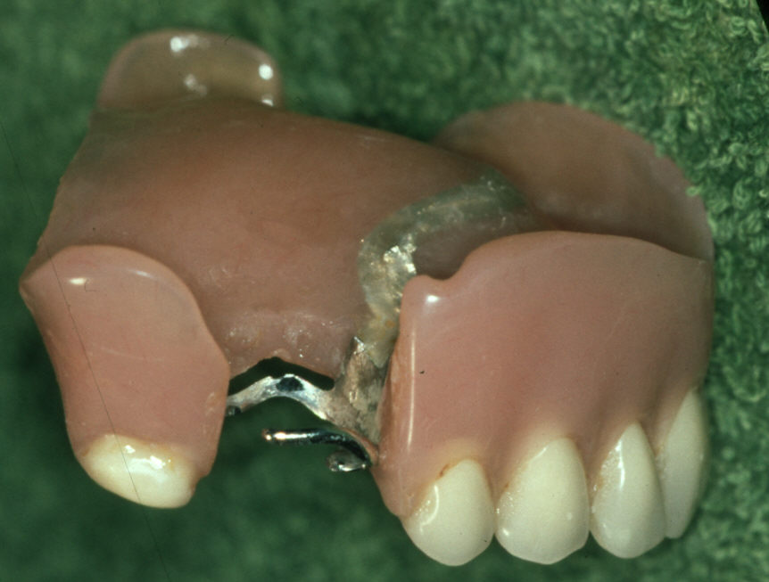
Depende de área basal, extensão de borda, relação intermaxilar, montagem dental e expectativa funcional realista.
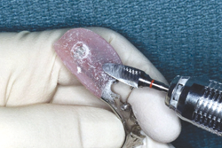
Indicado quando a base perdeu adaptação, desde que dentes, oclusão e estrutura ainda justifiquem manutenção.
Em PPR, a posição das áreas edêntulas orienta conector maior, necessidade de retenção indireta, extensão de sela, apoio e controle de rotação.
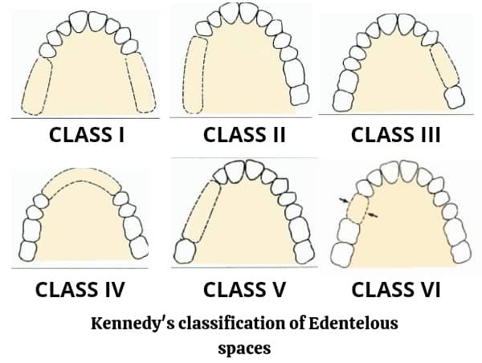
Extremidades livres bilaterais. Costuma exigir atenção forte à rotação da base, retenção indireta e suporte mucoso.
Extremidade livre unilateral. O desenho precisa equilibrar suporte dental e mucoso sem sobrecarregar o dente pilar.
Espaço intercalar. Tende a ser mais dento-suportada quando há pilares adequados nos dois lados do espaço.
Espaço anterior cruzando a linha média. A estética dos retentores e a estabilidade anterior precisam ser bem planejadas.
O desenho deve buscar suporte, retenção, reciprocidade, estabilidade e conforto. Quando uma dessas funções falta, o paciente sente em adaptação, mastigação ou higiene.
Saiba mais sobre nosso processo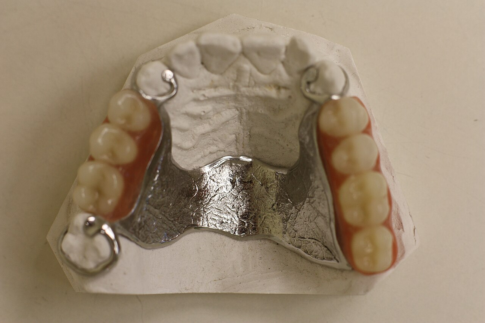
Une os lados da arcada e deve ser rígido o suficiente para não deformar em função.
Dão suporte vertical e ajudam a evitar que a base pressione excessivamente a mucosa.
Engajam áreas retentivas medidas e precisam de reciprocidade para proteger o pilar.
Conectam selas, apoios e retentores ao conector maior sem atrapalhar higiene.
Suportam os dentes artificiais e acompanham tecidos que podem mudar com o tempo.
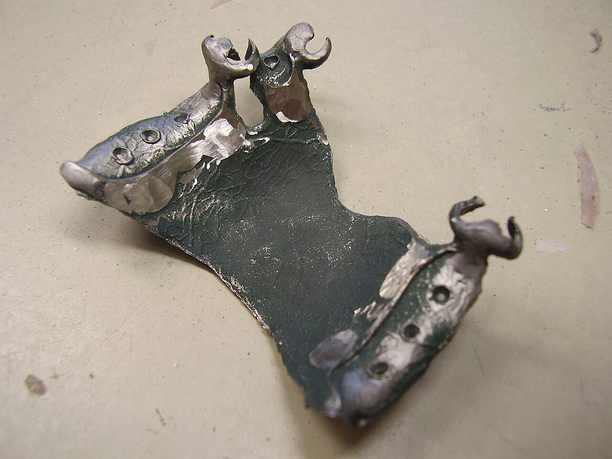
Permite estrutura rígida e mais delgada. Apoios, conectores e grampos precisam assentar sem tensão.
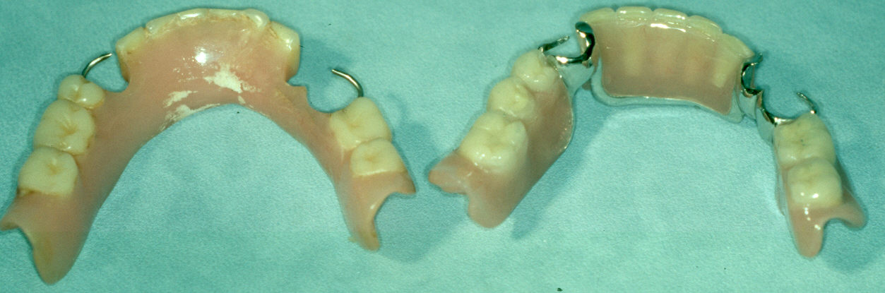
Recebe dentes artificiais, permite ajustes e reembasamento, mas sofre com desgaste e mudanças de tecido.
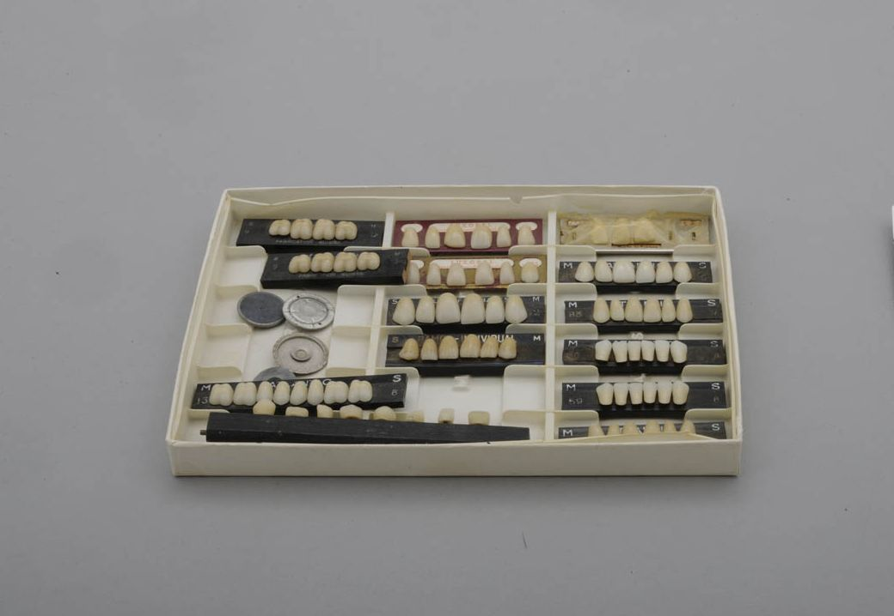
Devem respeitar corredor bucal, plano oclusal, dimensão vertical e fonética, não só a cor.
Regiões de língua, bochecha, grampos e bordas precisam ficar lisas para reduzir trauma e biofilme.
Com o tempo, tecidos mudam, dentes artificiais desgastam, a base perde adaptação e componentes podem fraturar. A decisão depende de exame clínico e estado real da prótese.
Faz sentido quando a base perdeu adaptação, mas a estrutura, dentes, oclusão e estética ainda estão aproveitáveis.
Útil para pontos de pressão, polimento, pequena fratura ou ajuste de retenção, sempre após conferir assentamento.
Deve ser considerado quando há perda de suporte, instabilidade, desgaste severo, dor recorrente ou alteração importante de tecidos.
Em removíveis, o laboratório precisa receber mais que “fazer uma PPR”. Estas informações evitam retrabalho e ajudam a definir desenho, material e etapas de prova.
Informe se o caso é Kennedy I, II, III ou IV e marque modificações. Isso muda suporte, retenção indireta e extensão da sela.
Avise mobilidade, restaurações extensas, áreas retentivas, necessidade estética e se haverá preparo de apoio ou plano-guia.
Quando o grampo aparece no sorriso, vale discutir retenção, cor, espessura e manutenção antes de definir material flexível ou metálico.
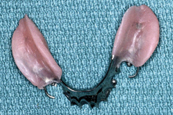
Envie fotos da prótese atual, tempo de uso, queixa principal e condição dos dentes artificiais, base, grampos e oclusão.
Perguntas comuns antes de enviar uma removível para produção, ajuste ou reembasamento.
Falar com especialistaA PPR pode ser indicada em perdas parciais quando existem dentes remanescentes capazes de contribuir com suporte, retenção e guia. Ela também é uma alternativa quando implantes, próteses fixas ou outros tratamentos não são viáveis por condição anatômica, clínica ou financeira.
A estrutura metálica costuma oferecer mais rigidez, apoio e controle biomecânico. Materiais flexíveis podem melhorar estética em alguns casos, mas a flexibilidade pode limitar apoios rígidos e conectores, então a indicação precisa ser criteriosa.
Volume excessivo, bordas mal polidas, pontos de pressão, retenção ativada demais, falta de assentamento e interferências oclusais estão entre as causas frequentes. Por isso, a instalação clínica e os ajustes pós-entrega são parte do tratamento.
Retenção, suporte, adaptação da base, dimensão vertical, oclusão, desgaste dos dentes, estética, fonética, inflamação de mucosa e condição dos dentes pilares. Sem essa avaliação, reembasar pode mascarar um problema maior.
O reembasamento faz sentido quando a prótese ainda tem estrutura, dentes, estética e oclusão aproveitáveis, mas a base perdeu adaptação. Se a peça está instável, fraturada, muito desgastada ou mal desenhada, refazer pode ser mais correto.
Envie classificação ou descrição dos espaços, dentes pilares, áreas retentivas observadas, fotos, modelo ou escaneamento, cor, tipo de material desejado, registros intermaxilares e observações sobre estética dos grampos.